About Omkar Water Tank Cleaning Services
Cleaner Tanks. Better Water. Professional Cleaning That Shows. Omkar Water Tank Cleaning Services provides professional water tank cleaning in Chhatrapati Sambhajinagar (Aurangabad) for homes, apartments, housing societies, commercial buildings, institutions, and industrial properties. We clean both overhead and underground water storage tanks, with the cleaning approach selected according to the tank type, construction, condition, size, accessibility, and site requirements.
A water tank may look closed and protected, but sludge, sediment, mud, dirt, algae, insects, and other deposits can build up inside over time. Our work is focused on the part that matters most — the inside of the tank where water is stored. Depending on the tank and site conditions, the cleaning process can include water removal, sludge and sediment removal, manual internal cleaning, washing, pressure-based cleaning, sanitisation, applicable UV treatment, and final inspection.
Residential & Housing Society Water Tank Cleaning
Cleaning for independent houses, villas, apartment buildings, housing societies, gated communities, and larger residential properties. Single or multiple overhead and underground tanks can be planned according to the property and site requirements.
Overhead & Underground Water Tank Cleaning
Professional cleaning for overhead tanks, underground tanks, and accessible water storage reservoirs. The cleaning approach is selected according to the tank construction, internal condition, capacity, access, and accumulated deposits.
Commercial, Institutional & Industrial Tank Cleaning
Water tank cleaning for offices, schools, colleges, hospitals, clinics, hotels, restaurants, hostels, factories, warehouses, commercial buildings, and other institutional or industrial properties.
RCC, Cement, Plastic & Sintex Water Tanks
Cleaning services for commonly used RCC, cement, plastic, and Sintex water storage tanks. Cleaning activities can vary according to the tank material, construction, surface condition, accumulated deposits, and accessibility.
We show the work, not just describe the service. Our website includes real water tank cleaning photos, before-and-after examples, cleaning videos, and customer feedback to give property owners a clearer understanding of the type of work performed by our team.
Omkar Water Tank Cleaning Services serves customers across Chhatrapati Sambhajinagar and nearby service areas, including residential, apartment, housing society, commercial, institutional, and industrial locations. Service availability depends on the property location, tank type, size, condition, and site requirements.
Our approach is not based on applying exactly the same method to every tank. Each water storage system is considered according to its actual condition and requirements so that the appropriate cleaning activities can be planned for the specific tank and property.
Find Omkar Water Tank Cleaning Services on Google
View our Google Maps location, business information and customer reviews for Omkar Water Tank Cleaning Services in Chhatrapati Sambhajinagar.
Why Choose Omkar Water Tank Cleaning Services?
Choosing a professional water tank cleaning service is not only about cleaning the tank. The work should be planned according to the actual tank condition, access, size, construction, and property requirements. At Omkar Water Tank Cleaning Services, our approach focuses on practical cleaning work and clear evidence of the service performed.
Real Cleaning Work & Visible Results
We show real water tank cleaning work through actual service photos, before-and-after examples, and cleaning videos so customers can see the type of work performed by our team.
Overhead & Underground Tank Cleaning
We clean both overhead and underground water storage tanks. The cleaning approach is selected according to the tank type, internal condition, accessibility, accumulated deposits, and site requirements.
Cleaning Based on Actual Tank Condition
We do not apply exactly the same cleaning method to every tank. The work can include manual internal cleaning, washing, pressure-based cleaning, sanitisation, applicable UV treatment, and final inspection depending on the specific tank and site.
Residential, Society & Commercial Coverage
Our services cover independent homes, apartments, housing societies, commercial buildings, institutions, and industrial properties across Chhatrapati Sambhajinagar and nearby service areas.
Experienced Team & Professional Equipment
Our cleaning work uses practical equipment and cleaning methods selected according to the tank and site conditions, with the work carried out by our service team.
Customer Feedback You Can See
Customer feedback from our Google Business Profile is displayed on this website, helping property owners understand the service experience reported by previous customers.
Water Tank Cleaning Services We Provide
Omkar Water Tank Cleaning Services provides water tank cleaning for different tank types, properties, and site requirements across Chhatrapati Sambhajinagar. The cleaning approach is selected according to the tank condition, construction, size, accessibility, and accumulated deposits.
Overhead Water Tank Cleaning
Cleaning of accessible overhead water storage tanks for homes, apartments, housing societies, commercial buildings, and other properties.
Underground Water Tank Cleaning
Cleaning of underground water storage tanks and accessible reservoirs, including removal of accumulated sludge, sediment, dirt, and other deposits.
Apartment & Housing Society Tank Cleaning
Water tank cleaning for apartment buildings, housing societies, gated communities, and larger residential properties with single or multiple water storage tanks.
Commercial & Institutional Tank Cleaning
Cleaning services for offices, commercial buildings, schools, colleges, hospitals, clinics, hotels, restaurants, hostels, and other institutional properties.
Industrial Water Tank Cleaning
Water tank cleaning for factories, warehouses, industrial properties, and other sites where water storage tanks require cleaning according to their condition and accessibility.
RCC, Cement, Plastic & Sintex Tank Cleaning
Cleaning services for commonly used RCC, cement, plastic, and Sintex water storage tanks, with the cleaning method selected according to the tank material and internal condition.
Water Tank Sanitisation
Sanitisation as part of the cleaning service where applicable, based on the tank type, condition, and site requirements.
Single & Multiple Tank Cleaning
Cleaning can be planned for individual tanks as well as multiple water storage tanks at residential, society, commercial, institutional, or industrial properties.
Water Tank Sanitisation in Chhatrapati Sambhajinagar
Water tank cleaning focuses on removing accumulated sludge, sediment, dirt, algae, and other deposits from inside the tank. Where applicable, sanitisation can be included as part of the overall cleaning service according to the tank type, condition, and site requirements.
Sanitisation After Tank Cleaning
Sanitisation is considered as part of the cleaning process after the tank has undergone the required internal cleaning and washing, where applicable to the specific tank and site.
Applicable to Overhead & Underground Tanks
Sanitisation can be included for accessible overhead and underground water storage tanks according to their condition, construction, accessibility, and site requirements.
Cleaning, Sanitisation & Final Inspection
Depending on the tank and site conditions, the overall service can include internal cleaning, washing, pressure-based cleaning, sanitisation, applicable UV treatment, and final inspection.
Sanitisation is not a substitute for physical tank cleaning. Accumulated deposits and other material inside the tank need to be addressed through the appropriate cleaning activities before the applicable sanitisation stage.
Professional Water Tank Cleaning Process We Follow
Our water tank cleaning process is carried out according to the tank type, condition, size, and site requirements. The process focuses on removing accumulated water, sludge, sediment, dirt, and other deposits from the tank before cleaning, sanitisation, UV treatment, and final inspection.
1. Tank Inspection & Preparation
We first inspect the water tank and assess its condition, size, access, and visible deposits before starting the cleaning work. This helps determine the appropriate cleaning approach for the specific tank and site requirements.
2. Water Removal
Stored water is removed from the tank as required so that the internal floor and surfaces can be properly accessed for cleaning and removal of accumulated deposits.
3. Sludge & Sediment Removal
Accumulated sludge, mud, sediment, dirt, and other deposits are removed from the bottom and internal areas of the tank so that these deposits are not left behind during the following cleaning and washing stages.
4. Internal Cleaning & Manual Scrubbing
The internal surfaces of the tank are manually cleaned and scrubbed to address dirt and deposits on accessible tank floors and walls before the washing stage.
5. Water Washing & High-Pressure Cleaning
The tank's internal surfaces are washed with water to remove remaining dirt and loosened deposits. Where suitable, pressure- based cleaning is used to further clean accessible internal surfaces according to the tank condition and site requirements.
6. Sanitisation
Where applicable, sanitisation is carried out after the required internal cleaning and washing stages as part of the overall tank cleaning process.
7. UV / UV Light Treatment
Where applicable, UV light treatment is included as an additional treatment step alongside the physical cleaning and sanitisation process, according to the tank and site requirements.
8. Final Inspection & Preparation for Use
The tank is inspected after the cleaning and applicable treatment stages to check the cleaned internal surfaces and overall condition before it is prepared for regular water storage and use.
The exact cleaning method can vary depending on whether the tank is overhead or underground, its construction and storage capacity, its condition, and the site requirements.
What Professional Water Tank Cleaning Helps With
Professional water tank cleaning focuses on the internal condition of the water storage tank. The cleaning work helps address accumulated sludge, sediment, mud, dirt, algae, and other visible deposits that can build up inside the tank over time.
Removes Accumulated Sludge & Sediment
Sludge, mud, sediment, dirt, and other accumulated deposits are physically removed from accessible areas of the tank during the cleaning process.
Cleans Internal Tank Surfaces
Tank floors and internal walls are manually cleaned, scrubbed, and washed to address dirt and deposits on accessible surfaces.
Addresses Visible Dirt & Algae Deposits
Visible dirt, algae, and other deposits inside the tank can be addressed through the appropriate manual cleaning, washing, and pressure-based cleaning methods according to the tank condition.
Helps Check the Tank's Internal Condition
Inspection before and after cleaning helps identify the visible condition of accessible internal surfaces and the deposits present inside the tank.
Leaves the Tank Ready for Regular Use
After the required cleaning and applicable treatment stages, the tank is inspected and prepared for regular water storage and use.
The exact result and cleaning method can vary according to the tank type, construction, condition, size, accessibility, and site requirements.
Local Water Tank Cleaning Service in Chhatrapati Sambhajinagar
Omkar Water Tank Cleaning Services provides water tank cleaning services for residential, apartment, housing society, commercial, institutional, and industrial properties across Chhatrapati Sambhajinagar.
Our service coverage includes properties where overhead or underground water storage tanks require cleaning. Service availability can depend on the property location, tank accessibility, tank condition, and site requirements.
Residential Properties
Water tank cleaning for independent houses, villas, and other residential properties in Chhatrapati Sambhajinagar.
Apartment & Housing Societies
Cleaning for apartment buildings, housing societies, and properties with single or multiple water storage tanks.
Commercial & Institutional Properties
Water tank cleaning for offices, hotels, restaurants, schools, colleges, hospitals, clinics, warehouses, and other commercial or institutional properties.
Industrial Properties
Water tank cleaning for factories, industrial premises, and other sites where accessible water storage tanks require cleaning.
For properties in and around Chhatrapati Sambhajinagar, customers can contact our team to discuss the tank type, location, accessibility, and cleaning requirement before scheduling the service.
Our Location in Chhatrapati Sambhajinagar
Visit Omkar Water Tank Cleaning Services at our Chhatrapati Sambhajinagar location in N-2 CIDCO. Use the map below to view our location and get directions.
Omkar Water Tank Cleaning Services
Chhatrapati Sambhajinagar Location
Plot No. 192, New ST Colony,
HPCL Housing Colony, N-2, CIDCO,
Chhatrapati Sambhajinagar,
Maharashtra 431006
Our Chhatrapati Sambhajinagar service location is in N-2 CIDCO. Use the map marker or the Get Directions button to navigate to us.
Real Water Tank Cleaning Work in Chhatrapati Sambhajinagar
The photographs below show actual water tank cleaning work carried out by the Omkar Water Tank Cleaning Services team. Our work includes internal tank cleaning, sludge and sediment removal, manual cleaning, water washing, pressure-based cleaning, and applicable sanitisation and treatment activities.
These real work photographs show our team, cleaning activities, water storage tanks, and equipment used during service work for residential, apartment, housing society, commercial, and other properties.
Omkar Water Tank Cleaning Team & Equipment
Our team uses the equipment required for the particular tank, cleaning condition, accessibility, and site requirements. These photographs show Omkar team members and cleaning equipment at actual work locations.
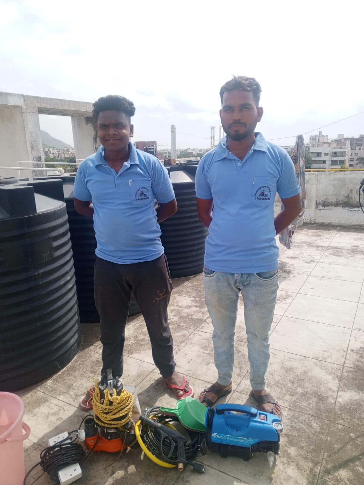
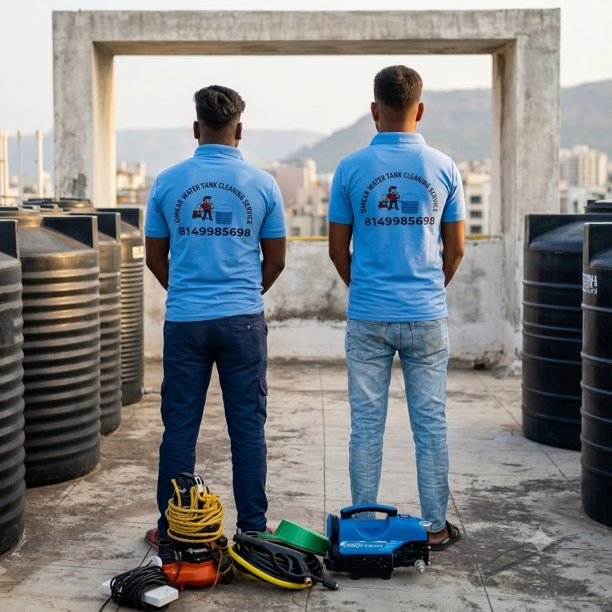
Large Water Tank Cleaning and Pressure Washing
Large water storage tanks require thorough access to internal surfaces. Our team carries out water washing and pressure-based cleaning where suitable for the tank condition and site requirements.
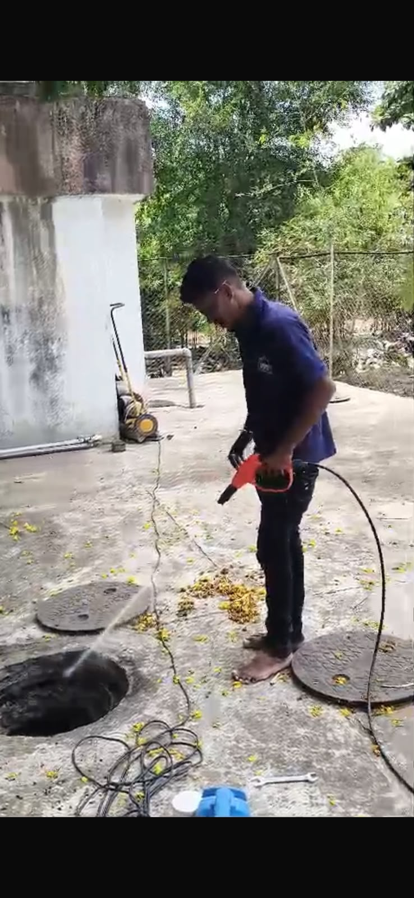
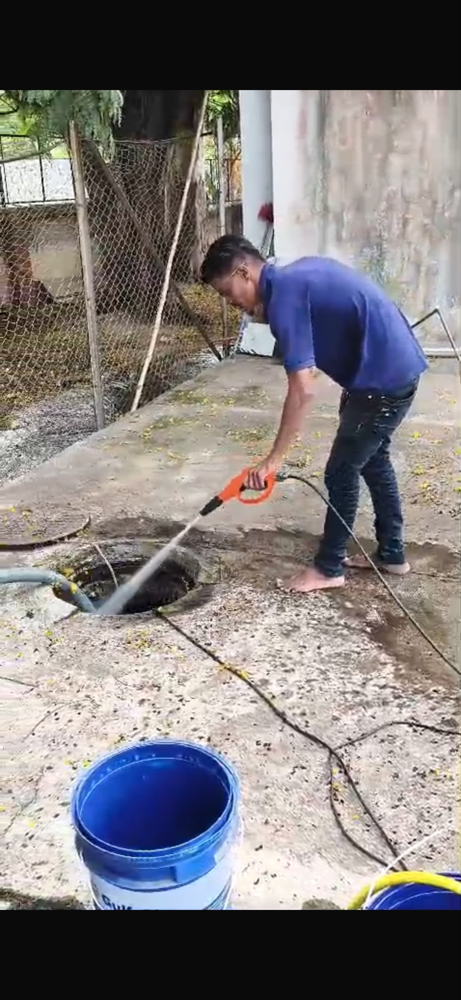
Internal Water Tank Cleaning and Manual Cleaning
Internal tank cleaning focuses on removing accumulated dirt, sludge, sediment, and other deposits from accessible tank surfaces before the washing and treatment stages.
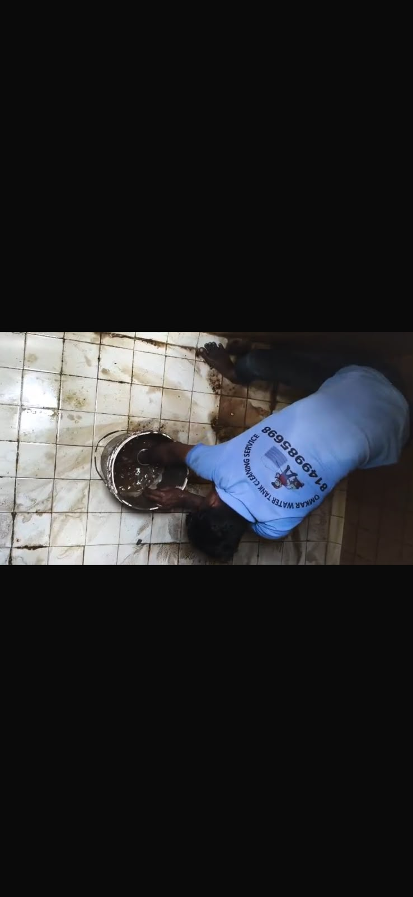
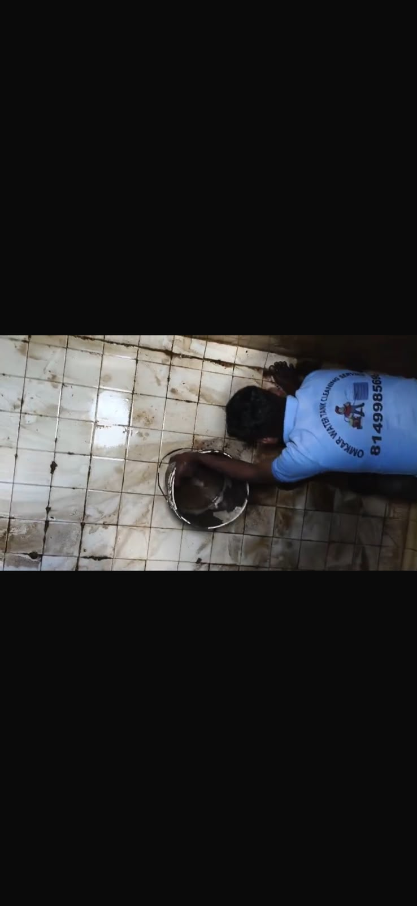
Sludge, Sediment and Dirty Water Removal
Accumulated sludge, mud, sediment, and dirty water are removed as required so that the tank floor and internal surfaces can be properly accessed and cleaned.
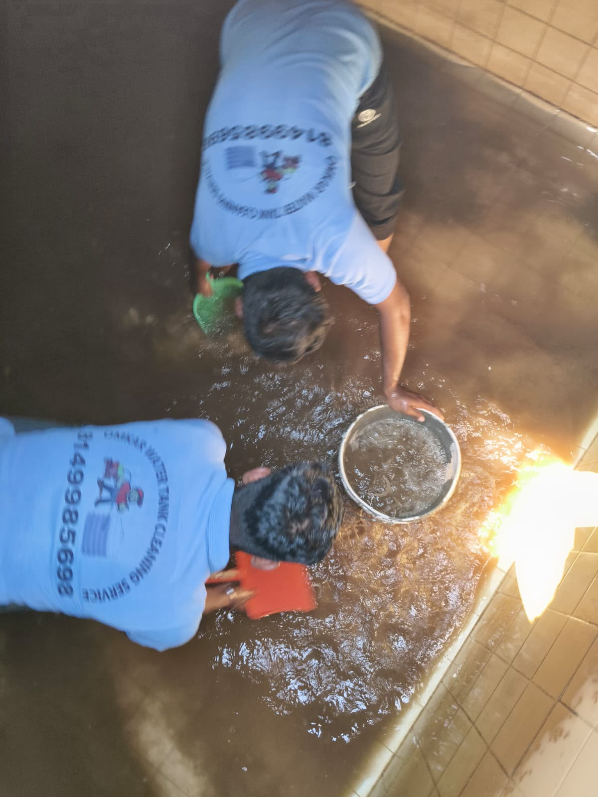
Pressure Water Cleaning of Tank Surfaces
Suitable pressure-based water cleaning is used to wash internal tank surfaces and remove loosened dirt and deposits after the initial cleaning stages.
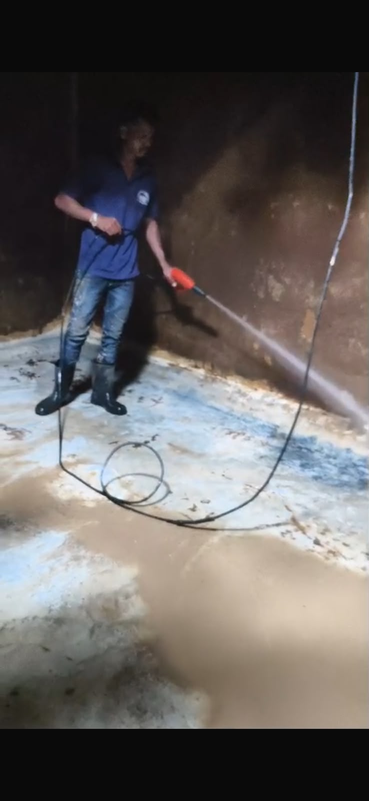
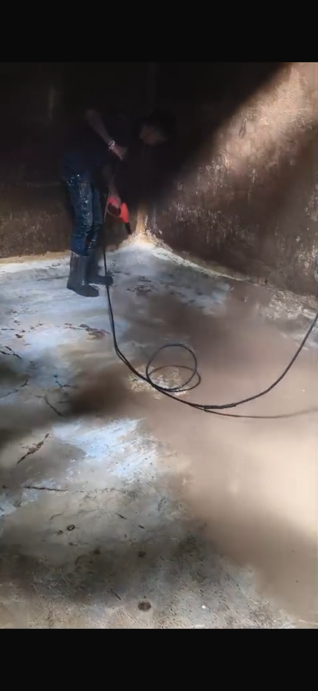
Plastic Water Tank Cleaning
Plastic water storage tanks can develop dirt, sediment, algae, and other deposits on their internal surfaces over time. The photographs below show actual plastic tank interiors at different cleaning conditions.
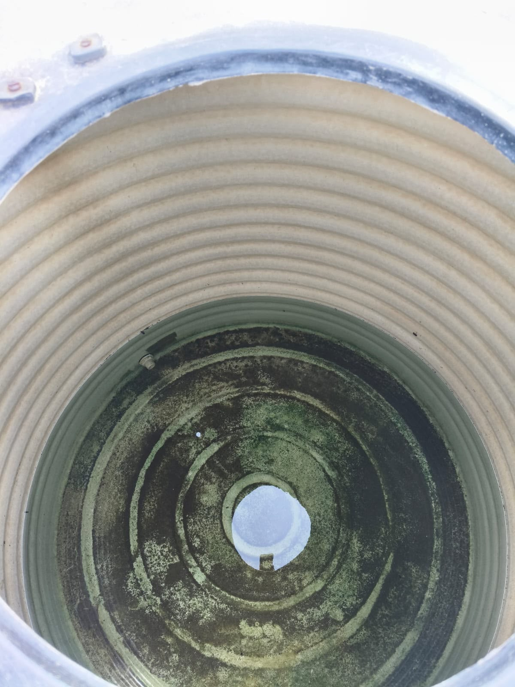
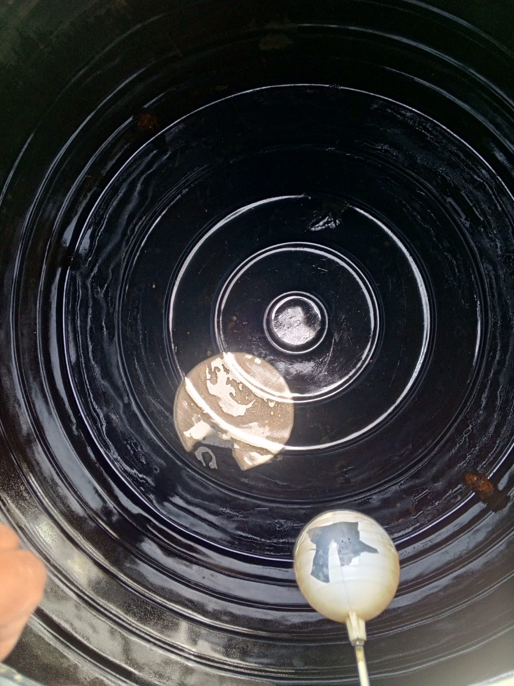
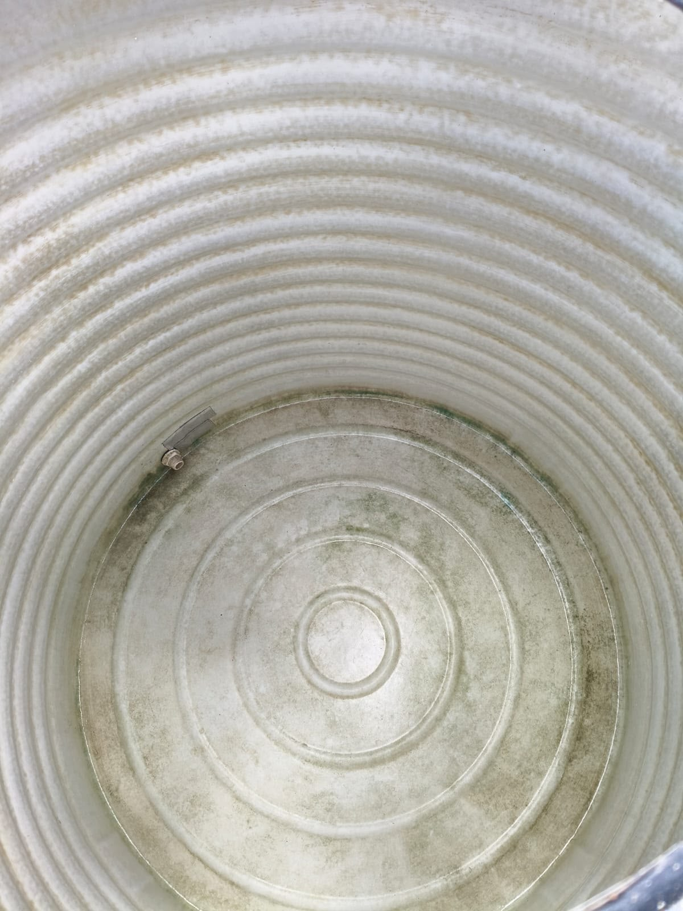
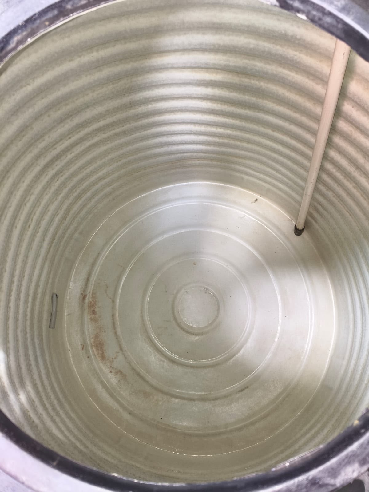
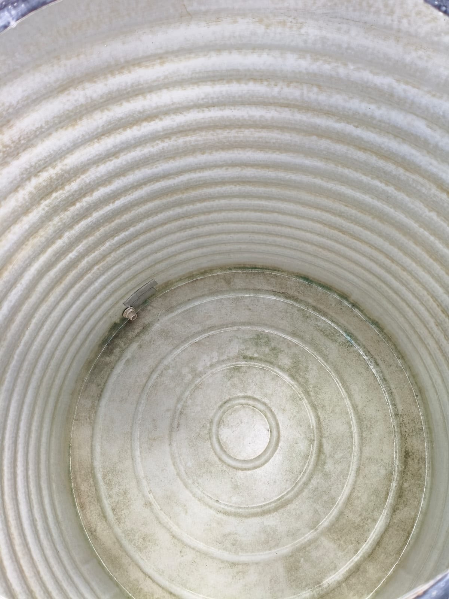
Large Water Storage Tank Cleaning
Large tiled water storage tanks can collect mud, sediment, algae, and other deposits on their floor and walls. Our team cleans accessible internal surfaces and washes the tank according to its condition and site requirements.
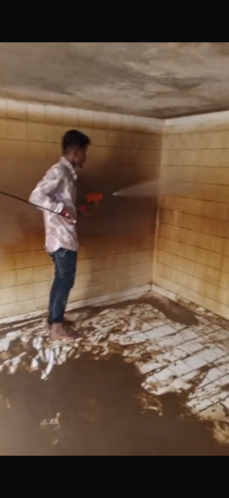
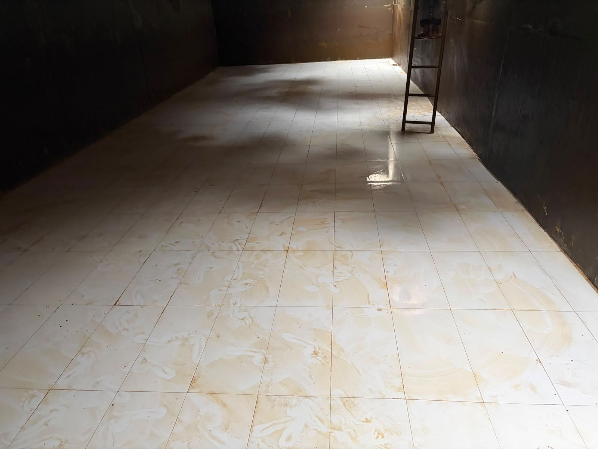
Clean Water Tank Interiors
These photographs show clean internal tank surfaces after water tank cleaning work. The final appearance can vary according to tank material, age, condition, and the type of deposits present before cleaning.
Real Work Photographs: The photographs in this gallery show actual Omkar Water Tank Cleaning Services work and tank-cleaning activities. The exact cleaning method used at a particular site may vary according to the tank type, construction, condition, size, accessibility, and site requirements.
Before & After Water Tank Cleaning Work
The before-and-after photographs below show the visible condition of water storage tanks before and after cleaning work carried out by the Omkar Water Tank Cleaning Services team.
These examples provide a visual view of how accumulated dirt, sludge, sediment, algae, and other deposits can be removed through the applicable tank cleaning process.
Large Water Storage Tank Cleaning
This comparison shows the visible condition of a large water storage tank before cleaning and its cleaned internal condition after the cleaning work.
Plastic Water Tank Cleaning
This comparison shows the visible difference in the internal condition of a plastic water storage tank before and after cleaning work.
About these before-and-after photographs: The appearance of a water tank after cleaning can vary according to its material, age, condition, surface type, accessibility, and the type and amount of deposits present before cleaning. The photographs shown here represent actual cleaning work and should not be considered a guarantee of an identical result for every tank.
Real Water Tank Cleaning Videos in Chhatrapati Sambhajinagar
Watch real water tank cleaning work carried out by the Omkar Water Tank Cleaning Services team. These videos show practical cleaning activities performed at actual work locations.
The work shown includes internal tank cleaning, pressure-based water washing, removal of accumulated deposits, and other cleaning activities depending on the tank type and site condition.
Water Tank Pressure Cleaning
This video shows pressure-based water cleaning being carried out on internal water tank surfaces.
Real Omkar water tank cleaning work showing pressure-based water washing inside a tank.
Internal Water Tank Cleaning
Internal cleaning helps remove accumulated dirt, sludge, sediment, and other deposits from accessible tank surfaces.
Actual video showing internal water tank cleaning work carried out by the Omkar team.
Water Tank Washing and Cleaning
Water washing is carried out as part of the cleaning process according to the tank condition and site requirements.
Real water tank washing activity recorded during an Omkar cleaning service.
Water Tank Cleaning Process in Action
This real work video provides a practical view of the tank cleaning activities performed by the Omkar team.
Actual Omkar service footage showing water tank cleaning work in progress.
Professional Water Tank Cleaning Work
A real service recording showing the Omkar team carrying out water tank cleaning work at a customer location.
Real service footage from an Omkar water tank cleaning visit.
Underground Water Tank Cleaning
Underground and large water storage tanks require cleaning of their accessible internal floors and walls based on their condition and construction.
Real Omkar video showing cleaning work carried out in a large underground water storage tank.
Water Tank Cleaning at an Actual Work Location
This video shows another real Omkar water tank cleaning activity, providing additional visual evidence of our field work.
Real service footage showing Omkar water tank cleaning work at an actual work location.
Real Work Videos: These videos show actual Omkar Water Tank Cleaning Services work. The exact cleaning method and sequence may vary depending on the tank type, size, construction, condition, accessibility, and site requirements.
Customer Reviews for Water Tank Cleaning Services in Chhatrapati Sambhajinagar
Customers in Chhatrapati Sambhajinagar have shared their experiences with Omkar Water Tank Cleaning Services. Reviews mention service quality, punctuality, professional staff, reasonable pricing and water tank cleaning work.
“Best quality service and pocket friendly. Quick and fast service. Highly recommended.”
Bhushan Joshi
Google Review · 5 Stars
“Very efficient, polite and cooperative staff. Absolutely punctual and fast service. Prices are reasonable and offer good service.”
Sudhanshu Sengaonkar
Google Review · 5 Stars
“Excellent service and guaranteed works. I personally like sincere efforts towards customer satisfaction. I strongly recommend this agency.”
Dr Mirza Shiraz Baig
Google Review · 5 Stars
“Very good behaviour of staff and perfect cleaning services done by their team. Highly recommended for societies tank.”
Shubham Methi
Google Review · 5 Stars
“Very Excellent service provided by Omkar Water Tank Cleaning Service. Guys were very quick, well mannered and know their work well. All service done by professional equipments and gadgets. A must recommended service for your home.”
suraj payghan
Google Review · 5 Stars
“Best Tank cleaning Services in Chhatrapati Sambhajinagar, staff is hard working, satisfied with their prompt response & services.”
SSAILESH DAHALE
Google Review · 5 Stars
“Good tank cleaning service - recommended for underground and overhead tank. Owner is cooperative and service rates are reasonable.”
Syed Azharuddin
Google Review · 5 Stars
“Very nice work done by team , Ground tank and above slab tank cleaning is very good”
Anil Jawale
Google Review · 5 Stars